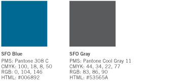
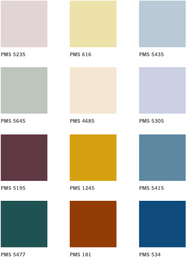
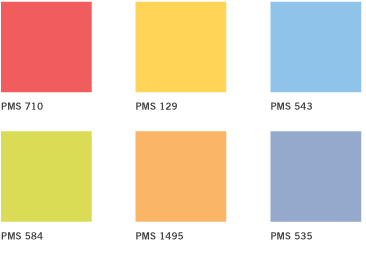
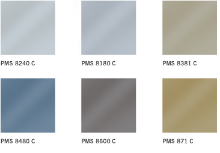

Color
Color Palette
The use of color is an integral component in the creation of a memorable brand. Please use only the colors shown in the palettes below.
Primary SFO Signature Colors
The colors PANTONE 308 and PANTONE Cool Gray 11 are used for the SFO signature.
The official RGB build for Pantone 308 is 0-104-146.

Palette A
Palette A has six pastel colors and six dark colors. These colors work well with the SFO signature and work best on corporate communications. Palette A is good for use as background colors, headline type and graphic elements on Report Covers, Press Kits or Newsletters.

Palette B
Palette B has six colors that are more vibrant and can easily be referred to as yellow, green, and so on. These colors, which are cheerful and appealing, work well with Palette A. Palette B is good for color coding external communications, maps or informational brochures.

Metallic Palette
The metallic palette has been developed for special applications only, such as corporate invitations and press kit folders. Metallic colors give a sophisticated, modern impression, and reflect the look and feel of the international terminal.
